Recenzii produse cosmetice și teste sincere
În această secțiune vei găsi recenzii detaliate ale produselor cosmetice pentru îngrijirea pielii și machiaj: creme pentru față, seruri, fonduri de ten, rimel, rujuri și multe alte produse populare. Analizăm ingredientele, testăm produsele și împărtășim rezultate reale după utilizare.
Aici găsești și selecții cu cele mai bune produse din diferite categorii — de la cosmetice accesibile până la branduri de lux. Astfel poți alege mai ușor produsul potrivit pentru tipul tău de piele și pentru nevoile tale.
Consultații / ProgramareRecenzii de cosmetice de îngrijire și decorative

La Roche-Posay Effaclar Duo(+)
Am testat cel mai popular tratament pentru imperfecțiuni. Reduce cu adevărat semnele post-acneice în 2 săptămâni?
Citește review →
CeraVe Hydrating Cleanser
Curățare blândă la un preț accesibil. Analizăm compoziția și eficiența produsului pe un ten sensibil.
Citește review →
CeraVe Moisturizing Cream
Soluția SOS pentru tenul foarte uscat. Analizăm cum formula bogată cu ceramide restabilește bariera lipidică.
Citește review →
La Roche-Posay Lipikar Balm AP+M
La Roche-Posay Lipikar Balm AP+M: Salvarea pentru pielea atopică și uscată
Analizăm de ce acest balsam a devenit recomandarea №1 a dermatologilor pentru a calma mâncărimile, a reduce roșeața și a reface rapid bariera cutanată.
Citește review →
La Roche-Posay Toleriane Dermallergo
Soluția de urgență pentru pielea hipersensibilă. Analizăm modul în care formula sterilă cu Neurosensină „stinge” instantaneu senzația de arsură, roșeața și disconfortul cutanat.
Citește review →
La Roche-Posay Effaclar MAT Hidratant Seboregulator Pentru Ten Gras
Soluția matifiantă de urgență pentru tenul lucios. Analizăm cum formula cu Sebulyse™ (un agent seboregulator mai eficient ca zincul) absoarbe sebumul, hidratează fără a bloca porii și oferă un finish mat de durată, luptând cu eficiență împotriva porilor dilatați.
Citește review →
La Roche-Posay Pure Vitamin C10
Un adevărat „iluminator” lichid pentru tenul lipsit de strălucire. Analizăm formula cu 10% Vitamina C pură stabilizată, care estompează ridurile, uniformizează nuanța pielii și oferă un efect de strălucire (glow) instantaneu, fără a irita tenul sensibil.
Citește review →
Vichy Liftactiv Specialist B3 Serum
Serul-best-seller pentru combaterea hiperpigmentării, a tenului tern și a ridurilor. Analizăm cum complexul puternic format din 5% Niacinamidă (Vitamina B3), Acid Glicolic, Apă Vulcanică Vichy și Peptide oferă efectul unui peeling profesional de salon, lăsând pielea luminoasă și uniformă.
Citește review →
Vichy Minéral 89 Booster Hidratant
Gel-boosterul zilnic cult pentru refacerea barierei cutanate și strălucire. Analizăm cum concentrația record — 89% Apă Vulcanică Vichy în combinație cu Acidul Hialuronic — elimină instantaneu senzația de strângere, protejează împotriva stresului urban și oferă o senzație de confort absolut.
Citește review →
La Roche-Posay Pure Niacinamide 10
Primul ser concentrat cu 10% Niacinamidă pură conceput pentru a combate petele pigmentare și cauzele acestora. Analizăm cum combinația de Niacinamidă, Acid Hialuronic și HEPES nu doar iluminează petele existente, ci și previne reapariția lor, redând tenului un ton uniform și o strălucire sănătoasă după doar 2 săptămâni.
Citește review →
La Roche-Posay Cicaplast Baume B5+
Balsam ultra-reparator universal cu 5% pantenol, madecassosidă și complexul inovator Tribioma pentru regenerarea barierei cutante deteriorate. Analizăm cum acest produs calmează instantaneu iritațiile, elimină uscăciunea și accelerează vindecarea pielii după peeling-uri, arsuri sau utilizarea activelor agresive, redând confortul întregii familii.
Citește review →
CeraVe Foaming Facial Cleanser
Gel de curățare spumant creat împreună cu dermatologii, îmbogățit cu 3 ceramide esențiale, acid hialuronic și niacinamidă pentru îngrijirea tenului mixt și gras. Analizăm cum această formulă blândă elimină eficient excesul de sebum și impuritățile fără a perturba bariera protectoare a pielii, oferind o senzație de prospețime și calmare după fiecare utilizare.
Citește review →
CeraVe Resurfacing Retinol Serum
Serum cu Retinol pentru Reîmprospătarea pielii, dezvoltat împreună cu dermatologii, îmbogățit cu retinol încapsulat, extract de rădăcină de lemn dulce și 3 ceramide esențiale. Analizăm cum această formulă eficientă ajută la reducerea aspectului semnelor post-acneice și a porilor, netezind textura pielii și restabilind bariera protectoare, fără a provoca iritații inutile, pentru un ten mai luminos și uniform.
Citește review →
Bioderma Sensibio AR+
Cremă inovatoare anti-roșeață, dezvoltată pentru pielea hipersensibilă, îmbogățită cu brevetul exclusiv Rosactiv™, enoxolonă și alantoină. Analizăm modul în care formula actualizată AR+ acționează biologic asupra cauzelor dilatării capilarelor, calmează instantaneu senzația de căldură și întărește bariera cutantă, reducând vizibil intensitatea roșeții și redând tenului un confort durabil și o nuanță uniformă.
Citește review →
Paula’s Choice 2% BHA Liquid Exfoliant
Exfoliant lichid legendar cu 2% acid salicilic (BHA), creat pentru curățarea profundă a porilor și transformarea texturii pielii. Analizăm modul în care formula unică cu metilpropandiol pătrunde în interiorul dopurilor de sebum, dizolvând eficient punctele negre și combatând imperfecțiunile. Produsul uniformizează instantaneu nuanța tenului, calmează roșeața și stimulează reînnoirea celulară, redând pielii luminozitatea naturală, un relief fin și o claritate remarcabilă.
Citește review →
La Roche-Posay Toleriane Rosaliac AR
Concentrat intensiv calmant, creat special pentru pielea predispusă la cuperoză și rozacee. Analizăm modul în care combinația unică de Sphingobioma și Neurosensină acționează asupra sursei roșeții, eliminând instantaneu senzația de arsură și prevenind reapariția episoadelor de iritație. Produsul fortifică bariera protectoare și normalizează microbiomul pielii, redând feței o nuanță uniformă, un confort de durată și rezistență în fața agresorilor externi din mediul urban.
Citește review →
Bioderma Cicabio Crème
Cremă reparatoare și calmantă, creată special pentru pielea deteriorată, iritată sau post-proceduri. Analizăm modul în care brevetul unic Antalgicine™ acționează rapid asupra sursei disconfortului, eliminând instantaneu senzația de mâncărime și durere. Formula îmbogățită cu acid hialuronic și agenți antibacterieni (cupru-zinc) fortifică bariera protectoare și accelerează regenerarea epidermei, redând feței un aspect sănătos și un confort de durată în fața agresorilor externi.
Citește review →
Isdin Isdinceutics Flavo-C Ultraglican
Ser antioxidant avansat sub formă de fiole, conceput pentru a neutraliza stresul oxidativ și a reda volumul pierdut al tenului. Analizăm modul în care formula inovatoare cu Ultraglicani și Vitamina C pură acționează sinergic pentru a stimula sinteza de colagen și a întări structura de susținere a pielii. Produsul oferă o hidratare intensă datorită acidului hialuronic, netezește vizibil primele linii fine și conferă tenului un efect de luminozitate instantanee ("glow"), protejând în același timp bariera cutanată împotriva agresiunilor urbane.
Citește review →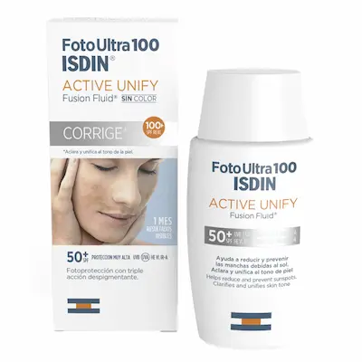
Isdin FotoUltra Active Unify
Isdin FotoUltra Active Unify oferă o protecție solară cu acțiune triplă, concepută pentru a combate hiperpigmentarea, petele și melasma. Complexul DP3-Unify reglează producția de melanină, în timp ce textura Fusion Fluid asigură o absorbție rapidă și o protecție ridicată SPF 100+ (PPD 49) împotriva radiațiilor UVA/UVB. Aflați mai multe detalii despre beneficiile produsului pe site-ul oficial Isdin.
Citește review →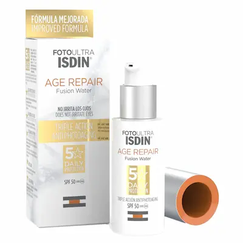
Isdin FotoUltra Age Repair Fusion Water
Un fotoprotector revoluționar pe bază de apă, care combină protecția solară maximă cu o îngrijire anti-îmbătrânire avansată. Analizăm în detaliu acțiunea tehnologiei DNA Repairsomes®, care ajută celulele să repare daunele la nivelul ADN-ului cauzate de radiațiile ultraviolete. Datorită conținutului de peptide Q10 și a booster-ului de colagen, produsul nu doar previne fotoîmbătrânirea, ci reduce activ ridurile existente, redând pielii fermitatea pierdută. Textura ultra-lejeră Fusion Water se absoarbe instantaneu, nu lasă luciu inestetic și servește ca o bază ideală pentru machiaj, oferind o protecție complexă împotriva smogului urban și a stresului oxidativ.
Citește review →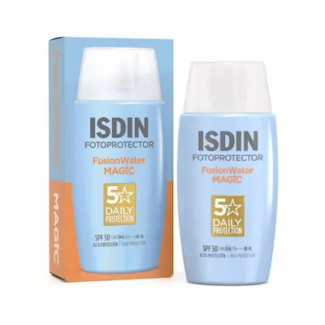
Isdin Fotoprotector Fusion Water Magic
Un fotoprotector ultra-lejer pe bază de apă, ideal pentru utilizarea zilnică, ce oferă o protecție ridicată împotriva radiațiilor UV fără a lăsa reziduuri grase. Analizăm tehnologia inovatoare Safe-Eye Tech, care permite aplicarea produsului pe întreaga față fără a irita ochii, și formula Wet Skin, eficientă chiar și pe pielea umedă. Îmbogățit cu acid hialuronic și vitamina E, acest fluid hidratează intens și oferă o acțiune antioxidantă puternică, lăsând pielea catifelată și mată. Este baza perfectă pentru machiaj, îmbinând protecția solară avansată cu o textură invizibilă care se absoarbe instantaneu
Citește review →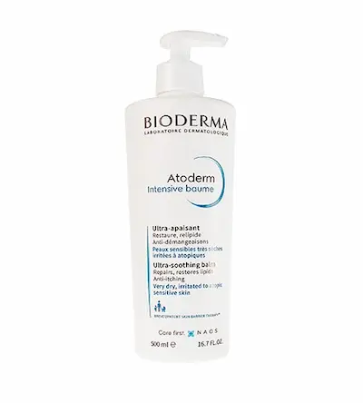
Bioderma Atoderm Intensive Baume
Acest balsam dermatologic este conceput pentru pielea predispusă la eczeme și dermatită atopică. Formula cu complexul Skin Barrier Therapy™ ajută la reducerea mâncărimii și previne recurența episoadelor, restabilind bariera protectoare a pielii. Conține, de asemenea, niacinamidă și lipide, care hrănesc intens și reduc inflamația. Ideal pentru climatul uscat și schimbările de temperatură din Romania.
Citește review →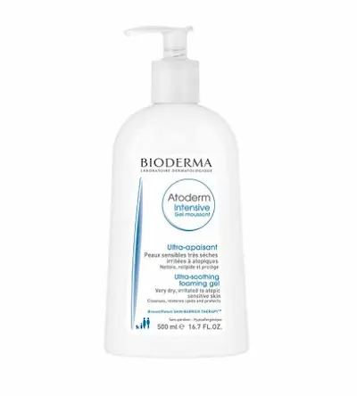
Bioderma Atoderm Gel Moussant
Gel spumant delicat pentru curățarea pielii uscate și sensibile, fără senzația de uscăciune sau strângere. Formula cu glicerină și apă termală îndepărtează blând impuritățile, menține echilibrul hidric al pielii și reduce iritațiile. Produsul este potrivit pentru utilizarea zilnică, oferind confort și finețe chiar și pielii deshidratate, protejând bariera cutanată în condiții de aer rece sau uscat.
Citește review →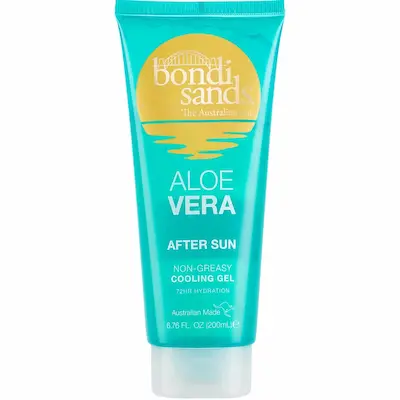
Bondi Sands Aloe Vera After Sun Gel
Gel răcoritor după plajă cu aloe vera și ingrediente hidratante care calmează instant pielea iritată, reduce roșeața și previne uscarea. Produsul este potrivit pentru utilizare zilnică după expunerea la soare, oferind confort și catifelare și ajutând la refacerea barierei pielii.
Citește review →
Bioderma Sebium Mat Control
Această cremă matifiantă ajută la reglarea producției de sebum, reduce luciul și îmbunătățește aspectul porilor. Textura este ușoară, se absoarbe rapid și este ideală pentru utilizarea zilnică pe tenul gras sau mixt.
Citește review →
La Roche-Posay Effaclar Astringent Lotion
Loțiune purifiantă cu efect de micșorare a porilor, creată pentru tenul gras și predispus la imperfecțiuni. Formula combină Alcohol Denat. și acid salicilic, ceea ce permite îndepărtarea eficientă a excesului de sebum, curățarea porilor și îmbunătățirea vizibilă a texturii pielii. Produsul se evaporă rapid, oferind o senzație imediată de prospețime și efect mat — ideal în sezonul cald.
Citește review →
Vichy Normaderm Phytosolution Matifying Care
Vichy Normaderm Phytosolution Matifying Care. Acesta ajută la controlul excesului de sebum, reduce aspectul porilor și îmbunătățește textura pielii. Are o textură lejeră, se absoarbe rapid și este potrivit pentru utilizarea zilnică pe pielea grasă sau mixtă, inclusiv în perioadele calde.
Citește review →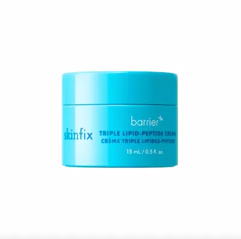
Skinfix Triple Lipid-Peptide Cream
Cremă cu peptide și lipide care refac fermitatea pielii și întăresc bariera cutanată. În compoziție se regăsesc peptide, lipide și ingrediente hidratante care îmbunătățesc densitatea pielii, netezesc ridurile și oferă hidratare profundă. Crema se absoarbe rapid, nu lasă senzație lipicioasă și este potrivită pentru îngrijirea zilnică la primele semne de pierdere a tonusului. Ideală pentru față, gât și zona decolteului.
Citește review →Review nou în curând...
Testăm constant produse noi pentru a vă oferi doar rezultate oneste.
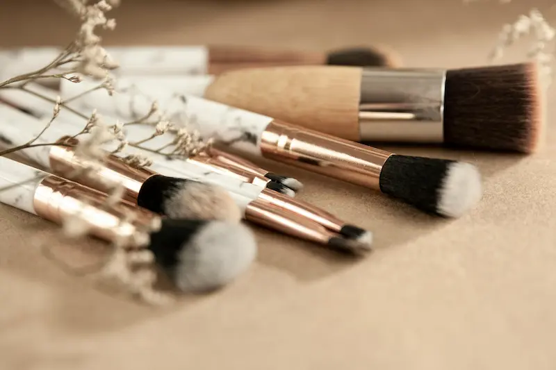
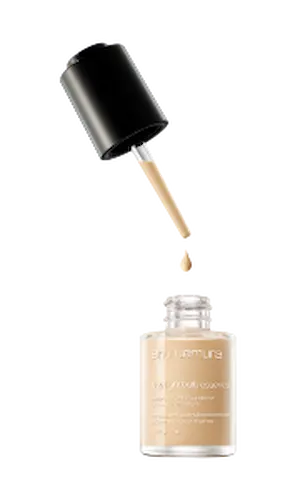
Fonduri de ten
Recenzii și selecții cu cele mai bune fonduri de ten
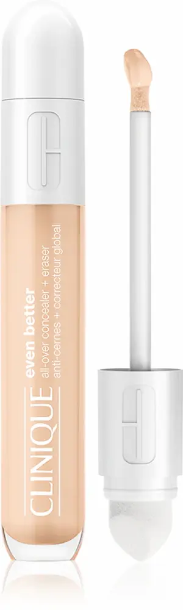
Corectoare
Cele mai bune corectoare și sfaturi de la makeup artiști
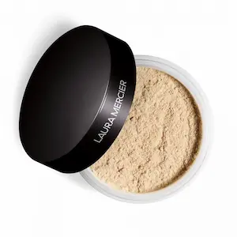
Pudre
Cele mai bune pudre mate și strălucitoare
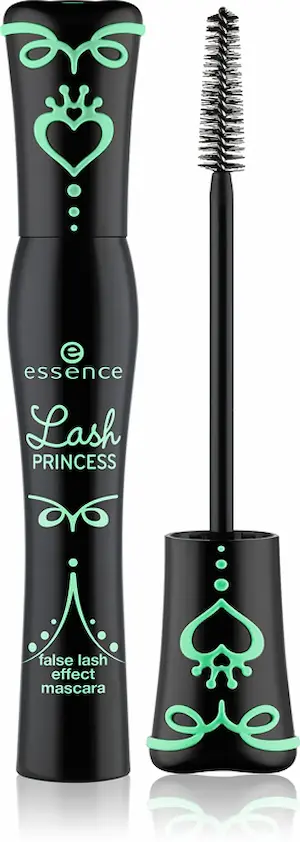
Rimeluri
Recenzii și selecții de rimeluri pentru volum

Farduri
Cele mai bune palete și recenzii de farduri
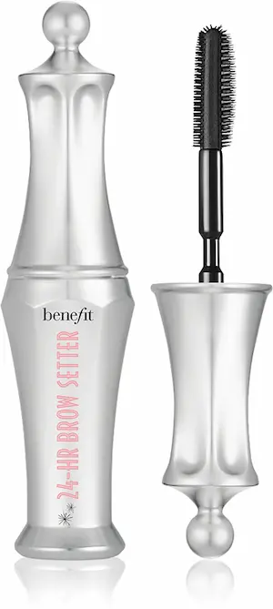
Sprâncene
Creioane, geluri și cele mai bune produse
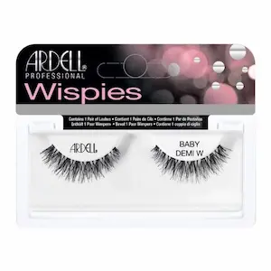
Gene
Produse pentru gene și selecții recomandate
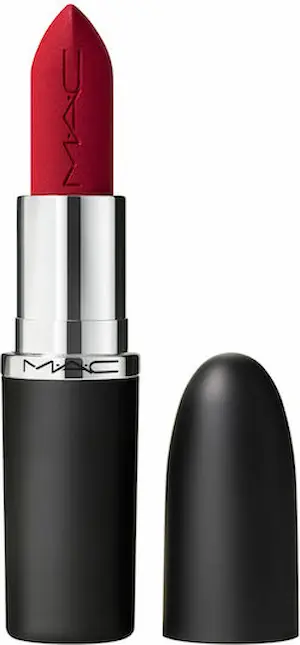
Rujuri
Selecții cu cele mai bune rujuri
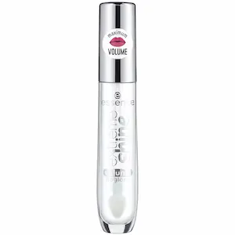
Gloss-uri
Cele mai bune gloss-uri pentru buze
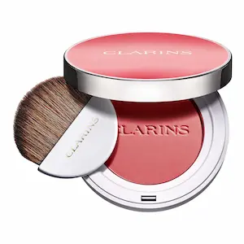
Highlighter / Blush
Recenzii și cele mai bune produse
Întrebări frecvente despre cosmetice
Cum să alegi cosmeticele potrivite pentru tipul tău de piele?
La alegerea produselor cosmetice este important să ții cont de tipul pielii și de nevoile ei principale. De exemplu, pentru pielea uscată sunt potrivite produse cu ingrediente hidratante precum acid hialuronic și ceramide. Pentru pielea grasă, sunt mai potrivite texturi ușoare și produse cu niacinamidă sau acizi.
Pot avea încredere în recenziile de cosmetice?
Recenziile ajută să afli experiența reală de utilizare a produselor. Totuși, este important să iei în considerare caracteristicile individuale ale pielii. Cel mai bine este să citești mai multe recenzii și să acorzi atenție compoziției produsului.
Cum știu dacă un produs este potrivit pentru pielea sensibilă?
Pentru pielea sensibilă, alege produse fără parfumuri agresive și cu un număr minim de potențiali iritanți. De asemenea, este util să studiezi ingredientele active și să testezi produsul pe o mică zonă de piele.
Ce este mai important la alegerea cosmeticei — brandul sau compoziția?
Cel mai important factor este compoziția produsului și potrivirea ei cu nevoile pielii. Chiar și produsele bugetare pot fi eficiente dacă conțin ingrediente active benefice.
Cât de des ar trebui schimbate produsele de îngrijire?
Nu este necesar să schimbi produsele frecvent. Dacă un produs este potrivit și oferă rezultate bune, poate fi folosit pe termen lung. Totuși, la schimbarea stării pielii sau a anotimpului, rutina de îngrijire poate fi ajustată.